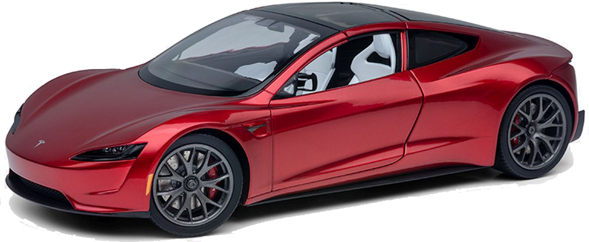
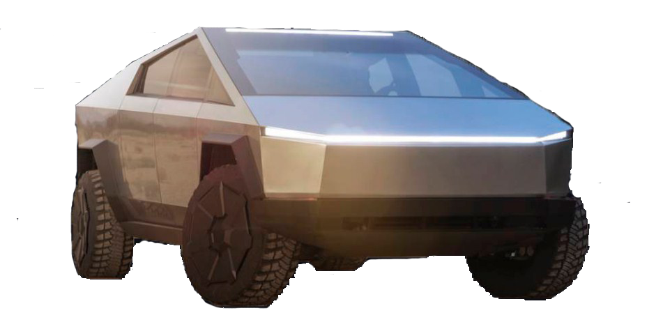
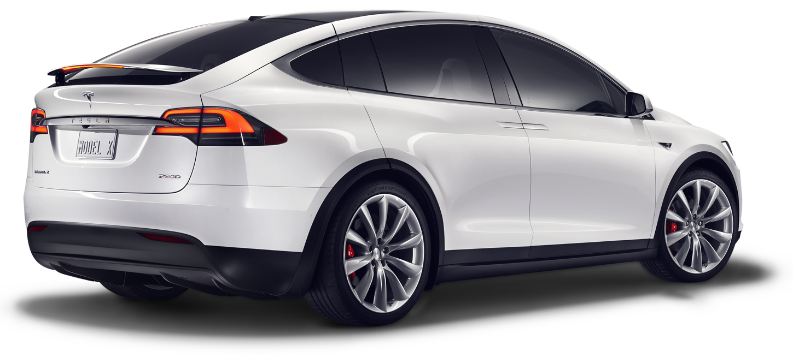

Tesla Modeli
Tesla Roadster je električni sportski dvosed koji se napaja litijum-jonskim baterijama. Proizveden u San Karlosu, Kalifornija, SAD, Tesla Motors tvrdi da automobil ubrzava od 0 do 100 km/h za manje od 4 sekunde i može preći oko 320 km na jedno punjenje. Efikasnost Tesla Roadstera je 133Wh/km, što je ekvivalentno 1,74 l/100 km.
Tesla Cybertruck dolazi sa samonivelirajućim vazdušnim vešanjem i ugrađenim invertorima za napajanje. Cene se kreću od $39.900 do $69.900, a proizvodnja se očekuje krajem 2021. godine za verzije sa dva i tri motora, dok verzija sa jednim motorom počinje krajem 2022. godine.
Tesla Model X može da preveze do 7 putnika, uz impresivnu autonomiju i kapacitet vuče do 2268 kilograma. Model X se ubrzava do 100 km/h za 3,2 sekunde, dok ulazni model 90D ubrzava za 4,8 sekundi i ima autonomiju od 413 km.
